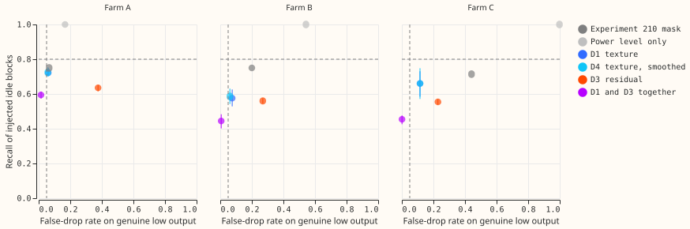
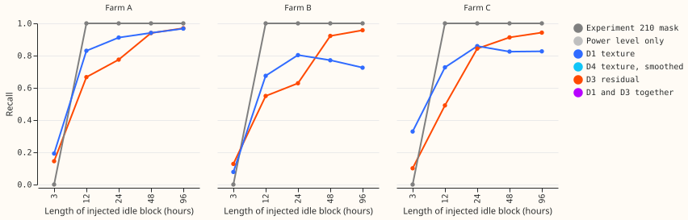
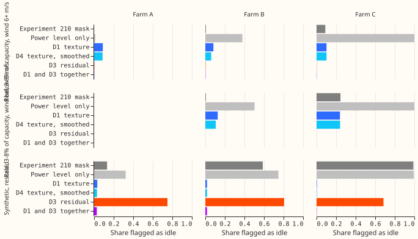
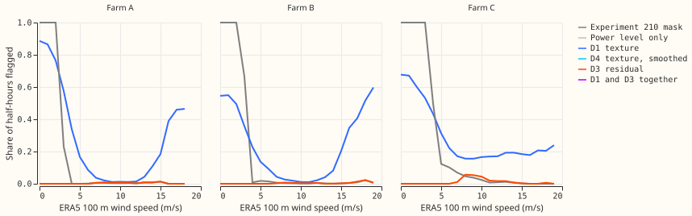

Which label-free detectors find idle half-hours at the three metered wind farms, at any wind speed, without flagging genuine low output?
The texture rules tested here do not clearly improve on the experiment 210 mask. The texture
detector D1 is a logistic regression on the shape of a wind farm's power readings (how much
consecutive half-hours differ and how often they repeat), ignoring the level. D4 smooths D1's
flags across neighbouring half-hours. Recall is the share of injected idle half-hours a detector
flags. False drop is the share of genuine or synthetic low-output half-hours it flags wrongly.
D1 finds injected idle blocks of 12 hours or more (recall 0.74 to 0.90 across the three farms) but
misses 3-hour blocks (0.08 to 0.33), with false-drop rates of 0.06 to 0.12. The experiment 210 mask
(an ERA5 wind threshold plus a rule for unbroken 12-hour runs of low readings) recalls every
injected block of 12 hours or more. Neither D1 nor D4 passes the pre-registered gate (recall at
least 0.80 and false drop at most 0.05) at any farm, so the verdict is not supported.
The question and what it narrows. The design for a wind idle-noise detector (Stage 1) asks for a detector that finds idle half-hours at any wind speed, which the ERA5 wind threshold of experiment 210 cannot do. ERA5 is the European Centre for Medium-Range Weather Forecasts fifth-generation reanalysis, an estimate of past weather. This experiment runs every part of Stage 1 that needs no human label, on three kinds of pseudo-label (none of them ground truth): idle blocks pasted into generating periods, low output that is genuine (real) or synthetic (rescaled), and a few real events (storm shutdown, negative readings). The tests run here did not settle whether the detectors work on real idle stretches, so the next step is hand labels or outage records from the network operator (National Grid Electricity Distribution, NGED).




Results
All numbers are interim scored output of this experiment. The gate: recall at least 0.80, false drop at most 0.05, and recall at least 0.10 above the experiment 210 mask's at matched false drop. Recall is the equal-weight mean over block-length by wind-bin cells; false drop is the equal-weight mean over the real sets and the synthetic set. Test years only, with every fitted value tuned on the other parity of years. Intervals resample calendar-year blocks.
| Farm | Candidate | Recall (95% interval) | False drop | Passes |
|---|---|---|---|---|
| A | D1 | 0.72 (0.70 to 0.75) | 0.061 | no |
| A | D4 | 0.72 (0.70 to 0.75) | 0.058 | no |
| A | Experiment 210 mask | 0.75 | 0.066 | not gated |
| B | D1 | 0.58 (0.53 to 0.63) | 0.076 | no |
| B | D4 | 0.59 (0.54 to 0.63) | 0.061 | no |
| B | Experiment 210 mask | 0.75 | 0.200 | not gated |
| C | D1 | 0.66 (0.59 to 0.73) | 0.115 | no |
| C | D4 | 0.66 (0.57 to 0.75) | 0.115 | no |
| C | Experiment 210 mask | 0.71 | 0.441 | not gated |
- Which parts of the gate fail. Recall is below 0.80 at all three farms for D1 and D4, and the false drop is above 0.05 at all three. At the mask's own false-drop rate, D1 does not exceed the mask's recall by 0.10 at any farm. At Farm A the two rates match (0.72 against 0.75). At Farm C D1 reaches recall 0.84 at false drop 0.38, against the mask's 0.71 at 0.44. At Farm B D1 was not measured at the mask's rate of 0.20, because its false-drop sweep stops at 0.13 (recall 0.61).
- Short blocks account for the recall shortfall. D1's recall for blocks of 12 hours or more is 0.90 at Farm A, about 0.74 at Farm B, and 0.79 at Farm C, against 0.19, 0.08, and 0.33 for 3-hour blocks. D4 changes recall by 0.00 to 0.01 (its minimum detectable effect over D1 is 0.005 to 0.023), so smoothing adds nothing here.
- The experiment 210 mask recalls long blocks automatically. It recalls every injected block of 12 hours or more and none of 3 hours, because the pasted blocks are exactly the kind of unbroken low-reading run its rule drops (prediction P5). Its false-drop rate is high at Farm B and Farm C (0.20 and 0.44), because the synthetic low output is also an unbroken run of low readings at high wind. The mask therefore cannot tell a rescaled run from an outage. A real outage may differ from a rescaled run in ways these pseudo-labels do not show.
- The residual rule D3 cannot separate idle from low output at high wind. D3 compares the reading with the power the ERA5 wind implies. It flags 69% to 81% of the synthetic low output (false drop 0.23 to 0.38 in total) and recalls 0.56 to 0.64 of the injected blocks. Requiring both D1 and D3 gives false drops of 0.1% to 1.5% and recall of 0.44 to 0.59. That combination does not enter the verdict.
- Level-matched area under the receiver operating characteristic curve (AUC) of D1's score (sure-idle against sure-generating rows, test years): 0.92 (0.88 to 1.00) at Farm A, 0.71 (0.66 to 0.77) at Farm B, and 0.74 (0.69 to 0.79) at Farm C.
- Real data at high wind. D1 flags 3.8%, 7.3%, and 20.3% of half-hours with ERA5 wind above 1.5 times the used cut-in at Farm A, B, and C (the mask flags 0.5%, 0.7%, and 7.4%). At Farm C the flags form 86 runs of 24 hours or more and 40 of 48 hours or more, the longest 263 hours. D1 also flags 2.8%, 4.6%, and 10.1% of half-hours with power of at least 10% of capacity at high wind, so a share of the flags at Farm C are false. Of the 7,270 high-wind half-hours that D1 flags at Farm B, 3,069 are also flagged at Farm C.
- Farm B negative readings (evidence of non-generation). At high wind D1 flags 41% of the 713 negative readings (D4 35%, the mask 10%). Prediction P6 required 70%, so P6 fails. Over all winds D1 flags 57% and the mask 75%.
- Storm shutdown. Only 3, 0, and 4 half-hours have ERA5 wind of 22 m/s or more with power in the idle band at Farm A, B, and C, which is too few for any rate.
- Predictions. P1 fails (neither D1 nor D4 passes at Farm B or Farm C). P2 fails in its mechanism: Farm A fails the gate on recall and on the real sure-generating rows (false drop 0.089), not on the synthetic low output (0.032). P3 fails (D4 raises recall by at most 0.01). P4 holds in part: D3 flags 69% to 81% of the synthetic low output, short of 90%, and fails alone, while D1 and D3 together pass the false-drop gate but fail recall. P5 holds. P6 fails.
What a hand-labelled sample would add
- The question the pseudo-labels did not settle is whether a flagged half-hour at moderate or high wind is a whole-farm outage, a partly available farm, or an ERA5 error at a 25 km cell. The pseudo-labels here come from the same readings and ERA5 wind that the detectors read.
- Precision of a recall estimate. D4 flags at least 6 half-hours at high wind on 8%, 16%, and 28% of farm-days at Farm A, B, and C. These shares are upper bounds on idle prevalence, because D4 also flags some generating rows. A random sample of 100 farm-days per farm would then hold at most about 8, 16, and 28 idle days, giving half-widths on a recall of 0.8 of at least about 0.28, 0.20, and 0.15. A sample of 100 days drawn from days that a detector flags would give about 0.08.
- Minimum detectable effects. Paired recall differences smaller than 0.04 to 0.11 (D1 against the mask, 2.8 times the standard error over seven year blocks) cannot be told from zero. The intervals of D1 minus the mask include zero at Farm A (-0.05 to 0.00) and Farm C (-0.13 to 0.02), and exclude it in the mask's favour at Farm B.
Caveats
- Injection flatters recall. The pasted floor is an exact copy of calm-night readings from the opposite parity of years, with hard joins every 12 half-hours. Recall excluding the half-hours next to a join differs by at most 0.012. The 3-hour and 24-hour windows reach past a join, so that exclusion understates the join's effect.
- The false-drop sets are not independent of the detectors. The synthetic low output shrinks the differences between half-hours along with the level, which should make it look more idle. D1 is also trained on part of that set. The real sets (power 3% to 8% of capacity at ERA5 wind of 6 m/s or more, or of 1.5 times cut-in to 6 m/s) contain any idle rows at high wind that the study seeks. The set from 1.5 times cut-in to 6 m/s is empty at Farm A, whose cut-in used is 4.5 m/s.
- Tune-year thresholds transfer imperfectly. D1's threshold gives a 5% false drop on the tune years and 6% to 12% on the test years. A sweep of D1 at false-drop targets of 1%, 2%, and 10% shows that tightening does not recover the gate at Farm B or Farm C.
- Cut-in and ERA5 are not refitted per fold. The used cut-in comes from experiment 210's report (fitted on all years) and defines the high-wind rows and the mask's outage rule. The idle band, wind threshold, power curve, logistic fit, and thresholds are fitted on the tune years only.
- Seven cells had fewer than 10 blocks per fold and were dropped from the recall average: the 48-hour and 96-hour moderate-wind cells at Farm A and Farm B, and the 24-hour, 48-hour, and 96-hour moderate-wind cells at Farm C. Ten replicates re-pick the same locations, so intervals resample calendar years, of which there are about seven.
- One texture rule was tested. D1 is one logistic regression on one set of statistics, and D1a (the single best statistic of experiment 431) is in the stored tables only. Other texture rules may do better.
- Checks. No forecast is scored, so the median-minus-mean, tail, and curtailment checks do not
apply, and none of the audit triggers applies. The three customer-generator series are never
flagged by the production cleaning rule, so no
substation_zerorows were dropped.
What to try next
- Offer hand labels or ask NGED for outage dates and a reactive-power channel; the tests run here did not settle the question.
- Keep the experiment 210 mask for the training and evaluation row sets for now.
- Stage 5 of the design (capacity change points) was not run here and is the next label-free item.
Experiment details
- Code:
ml-experiments/00444-wind-idle-detectors-label-free-bake-off/(e00444_bakeoff.py,e00444_summarise.py,e00444_charts.py), importing experiment 431's feature code (ml-experiments/00431-wind-idle-data-look/) and experiment 210's wind-threshold fit (ml-experiments/00210-wind-idle-noise-mva-artefact/). Data: the experiment's folder underdata/ml-experiments/(private). - Cadence, weather, and cleaning: no forecast and no refit. ERA5 100 m wind (research-only, about 5 days late) is used by the pseudo-labels, D3, and the mask; D1 and D4 read the power series only and are usable as-of.
- Reviews: one Sonnet plan review (nine findings, all accepted and written into the plan before any code), one Sonnet code review before scoring (ten findings; eight fixed, one documented, one rejected as harmless), one Sonnet numbers review (sixteen findings, applied), and one Sonnet prose review (applied).